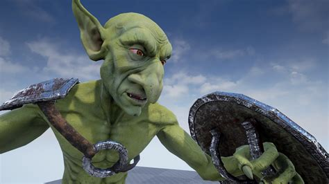
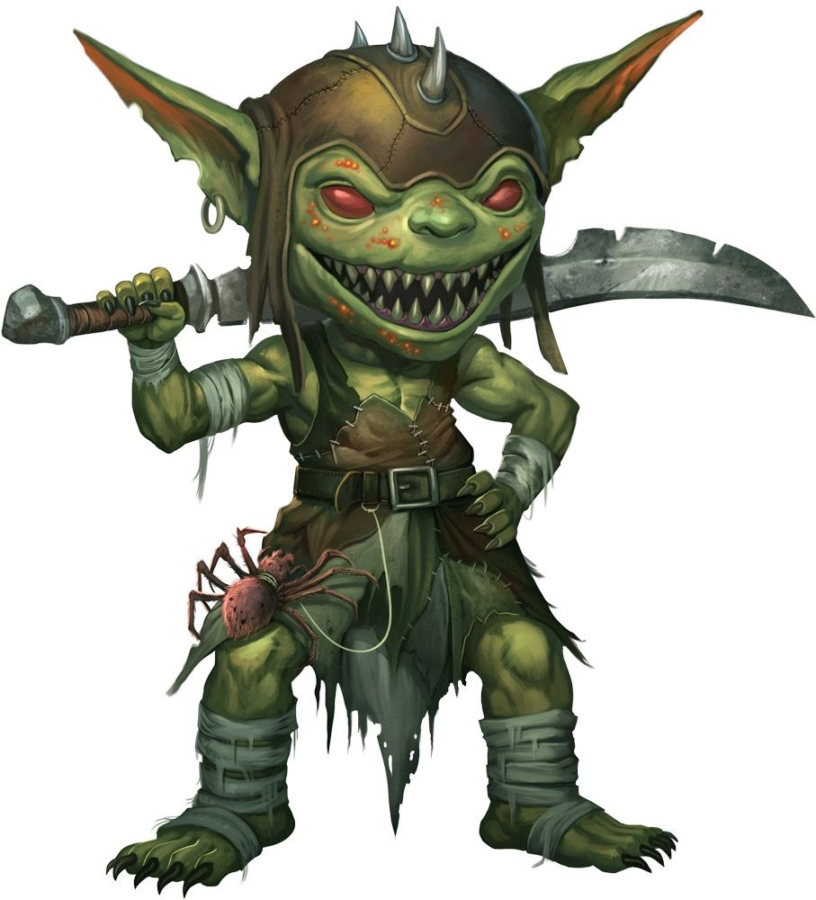
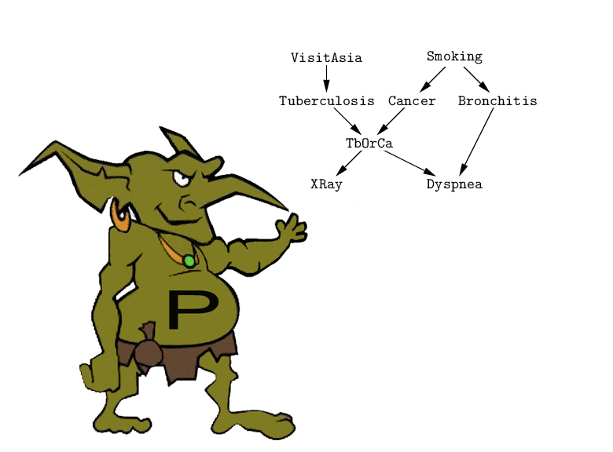

<h1>Brendans Best Goblins</h1>

<h2>My top 3 goblins of all time</h2>
<hr />
<ol>
    <li><h3>Hobgoblin</h3></li>
     
    <br />
    <br />
        <ul>
            <li>225 bench</li>
            <li>Chief Keef lover</li>
            <li>Always real af</li>
        </ul>
    <li><h3>Normal Gobby</h3></li>
    <p>
        
    </p>
    <p>Classic, cant go wrong with a normal gobbie</p>
    <li><h3>Programming Goblin</h3></li>
    <p>
        
    </p>
    <p>Literally me bru